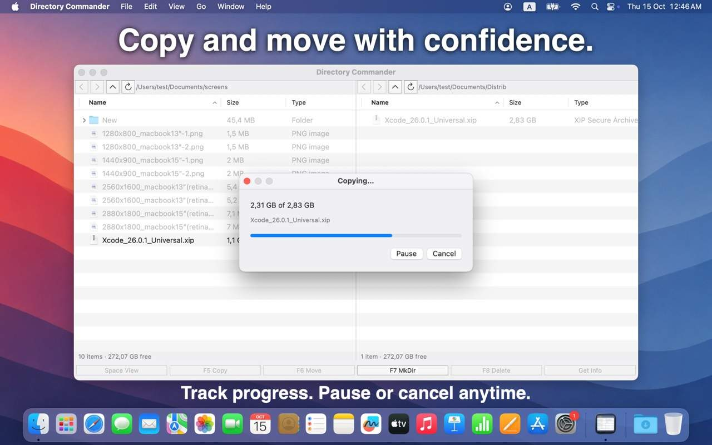
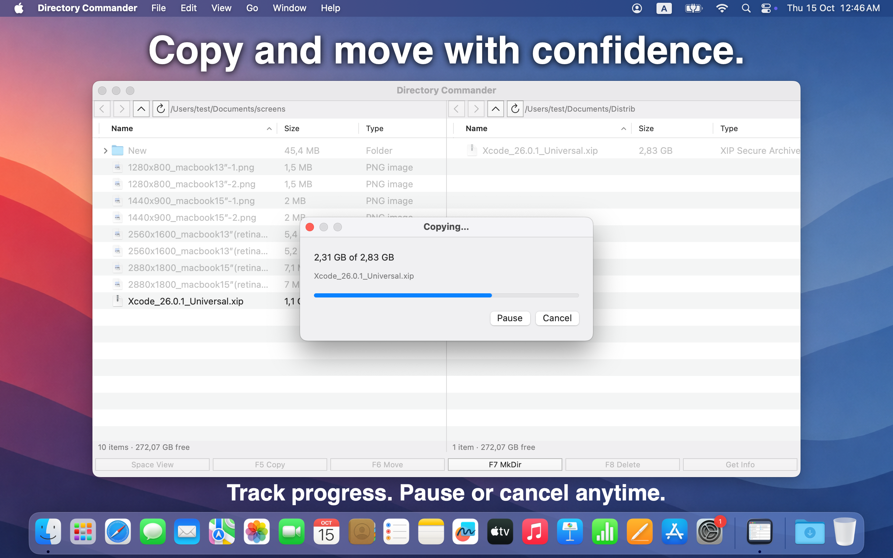
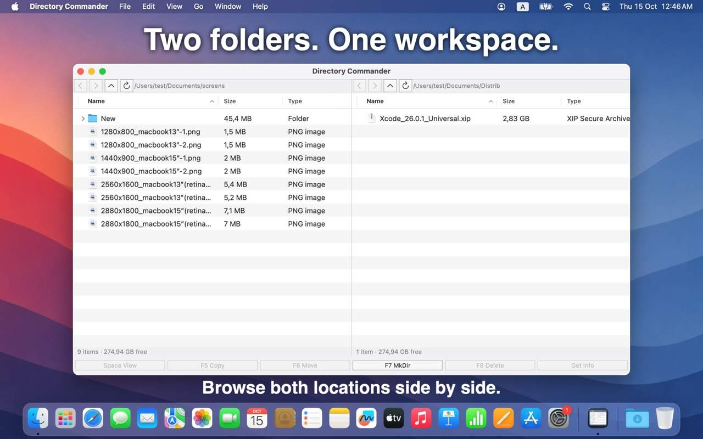
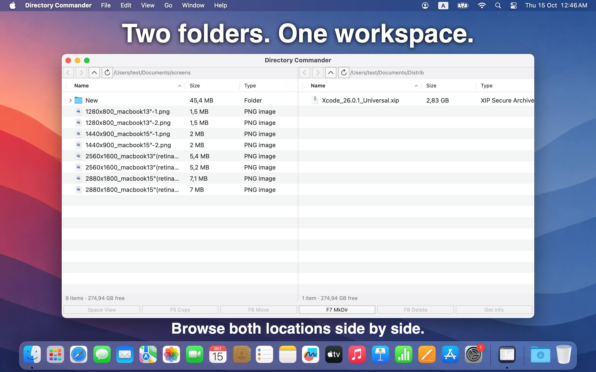
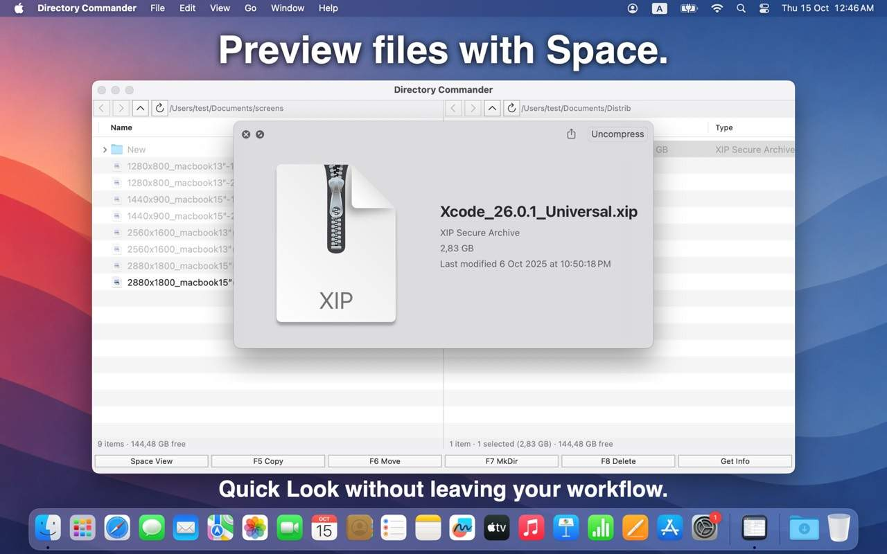

Copy and move with confidence.
Transfer files between panes with clear conflict choices and progress tracking. Pause or cancel anytime — useful when sorting Downloads, project folders, or files between drives.


Browse both locations side by side. Copy or move files between them without juggling Finder windows.


Transfer files between panes with clear conflict choices and progress tracking. Pause or cancel anytime — useful when sorting Downloads, project folders, or files between drives.


Quick Look without leaving your workflow. Glance at images, archives, and documents, then keep browsing — both folders stay in view.


Available on the Mac App Store. Requires macOS 10.12 or later.